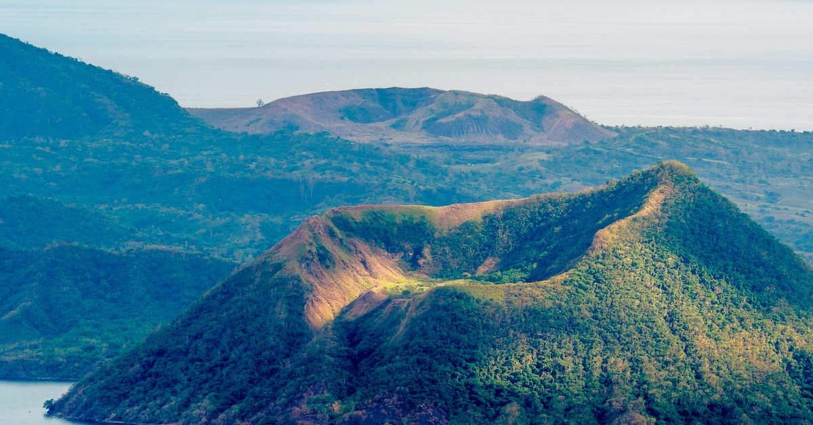
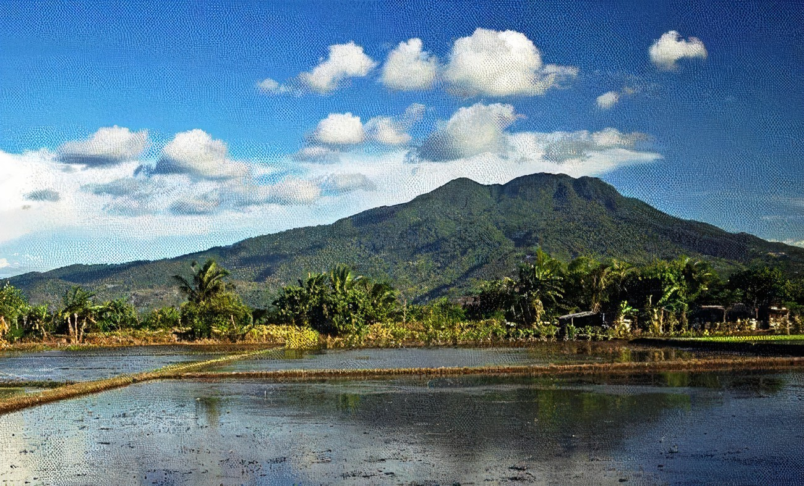
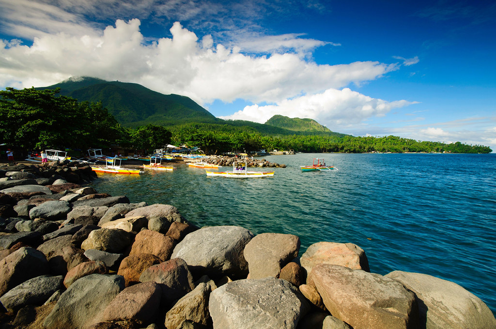

Mountain views in the Philippines
1. Taal Volcano and Lake, Tagaytay, and Batangas
Locals and international tourists from Manila frequently go south to Tagaytay, a tranquil town well-known for its temperate climate, breathtaking scenery, and several tourist attractions that are well-known for being one of the greatest family-friendly locations close to Manila.
2. Mount Gulugud Baboy, Batangas

For hikers looking to witness the beautiful views of Batangas' bays and islands, Mount Gulugud Baboy in Anilao, Batangas, is the ideal destination at 525 meters in height. The mountain is known for its verdant, undulating landscapes and profusion of animals, including dogs, cows, and goats, .
3. Mount Batulao, Batangas

There are many distinctive geographical features in Batangas, including a peak that resembles the gently rolling hills of Batanes. Mount Batulao in Nasugbu, Batangas is 693 meters high and is renowned for its breathtaking vistas of rocks and rocky grasslands. In addition to the scenery, the mountain features slopes suitable for beginners. The Old Trail and the New Trail both lead up the mountain. It is recommended that you start with the Old Trail, which has a more difficult route and requires rappelling on some of the paths, rather than the New Trail, which has easier terrain.
4. Mount Makiling, Batangas and Laguna
Mount Makiling, which rises to a height of 1,090 meters, keeps watch over the Laguna and Sto. Batangas' Tomas. If you're planning an overnight stay in Laguna before ascending this peak, there are many nearby hot spring resorts you can relax in. The mountain is noted for its geothermal features, such as mud and hot springs.
Because of the numerous species that call its forest home, including 62 that are indigenous to the Philippines, including the Philippine eagle owl, Philippine pygmy fruit bat, and the Philippine monkey, it has been designated as an ASEAN Heritage Park. Additionally, the mountain is thought to be the sanctuary of Lady Maria Makiling, whose reclined position is said to resemble the shape of the mountain, according to Filipino mythology.
5. Mount Hibok-Hibok, Camiguin
Mount Hibok-Hibok, which rises to a height of 1,332 meters, watches over Camiguin Island. Every mountain's summit provides breathtaking views, but Mount Hibok-summit Hibok's is where you may see the magnificent White Island, a white sandbar that stretches across Camiguin Island.
The woods of Mount Timpoong and Hibok-Hibok make up the Mt. Timpoong-Hibok-Hibok Natural Monument, which is also one of the Philippines' ASEAN Heritage Parks. The Camiguin Hawk Owl, Camiguin Narrow-Mouthed Frog, and Kalingag Tree are just a few of the rare species that make this area special and worthy of preservation as a heritage park.
There are many hot springs close by, including the popular starting point for mountain climbing, the man-made Ardent Hot Springs.